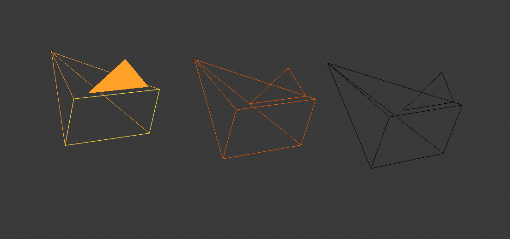
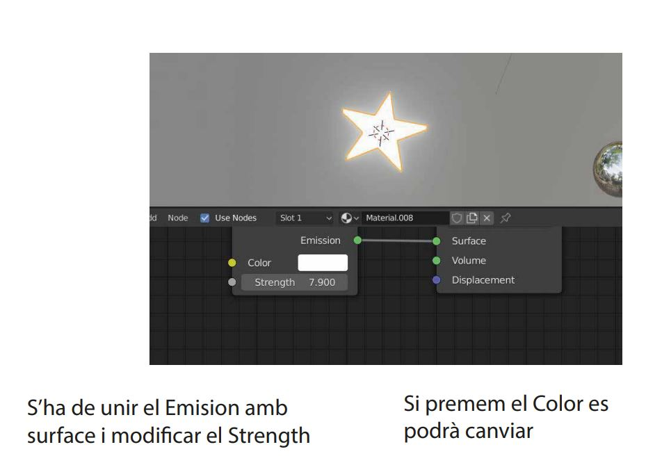

Els modes permeten editar diferents aspectes dels objectes. Mentre que el mode d'objecte us permet posicionar-los/girar-los/escalar-los, el mode d'edició permet canviar-ne la geometria, el mode de pose permet posar-los, etc. Podeu canviar el mode actual mitjançant el selector de mode a la capçalera de la finestra 3D. Els modes disponibles depenen del tipus d'objecte. La llista completa es mostra a continuació. A més d'utilitzar el selector, també podeu prémer Ctrl-Tab per obrir un menú circular al voltant del cursor per accedir-hi més ràpidament. (Si l'objecte seleccionat és una armadura, aquesta drecera canviarà entre el mode d'objecte i el mode de posada). Si premeu Tabulador, es canviarà el mode d'edició per als objectes que l'admeten. Els modes poden afectar moltes coses a Blender: Cada mode canvia la capçalera i la barra d'eines per mostrar el seu propi conjunt únic de menús i eines. Això també significa que afecta les tecles de drecera disponibles. Els modes poden canviar completament l'aspecte de la finestra gràfica. Per exemple, el mode Weight Paint ombrejarà l'objecte per mostrar els seus pesos de vèrtex, que normalment no són visibles. Els modes poden afectar altres editors. Per exemple, l'editor UV només es pot utilitzar si la finestra 3D està en mode d'edició. També a l'editor de propietats, certs botons i panells només es poden utilitzar en determinats modes.

objectes disponibles per a blender
El objecte principal es el cub
Per poder extreure aquest objectes es nesesari apretar el shift + a
Una càmera és un objecte que proporciona un mitjà per renderitzar imatges des de Blender. Defineix quina part d'una escena és visible a la imatge renderitzada. Les càmeres són invisibles en els renders, de manera que no tenen cap configuració de material o textura. Tanmateix, tenen taulers de configuració d'objectes i d'edició disponibles que es mostren quan una càmera és l'objecte actiu. Lent Tipus Les opcions de la lent de la càmera controlen la manera com es representen els objectes 3D en una imatge 2D. Perspectiva Això coincideix amb com veus les coses al món real. Els objectes llunyans apareixeran més petits que els objectes en primer pla, i les línies paral·leles (com ara els rails d'un ferrocarril) semblaran convergir a mesura que s'allunyen. Distància focal/camp de visió La distància focal controla la quantitat de zoom, és a dir, la quantitat de l'escena que és visible alhora. Les distàncies focals més llargues donen com a resultat un FOV més petit (més zoom), mentre que les distàncies focals curtes us permeten veure més escena alhora (FOV més gran, menys zoom). La vista de la càmera mostra l'escena actual des del punt de vista de la càmera activa. Unitat de lents La distància focal es pot configurar en mil·límetres o el camp de visió real com a angle. Profunditat de camp Les càmeres del món real transmeten la llum a través d'una lent que es doblega i l'enfoca al sensor. Per això, els objectes que es troben a una certa distància estan enfocats, però els objectes davant i darrere queden borrosos. L'àrea enfocada s'anomena punt focal i es pot establir mitjançant un valor exacte o utilitzant la distància entre la càmera i un objecte escollit: Objecte de focus Trieu un objecte que determinarà el punt focal. Enllaçar un objecte desactivarà el paràmetre de distància. Distància focal Estableix la distància al punt focal quan no s'especifica cap objecte de focus. Si els límits estan activats, es mostra una creu groga a la línia de visió de la càmera a aquesta distància. Pista Passeu el ratolí per sobre de la propietat Distància i premeu E per utilitzar un selector de profunditat especial. A continuació, feu clic a un punt de la finestra 3D per mostrar la distància des d'aquest punt a la càmera. Abertura F-Stop Relació F-Stop que defineix la quantitat de desenfocament. Els valors més baixos donen un fort efecte de profunditat de camp. Fulles Nombre total de fulles poligonals que s'utilitzen per alterar la forma dels objectes borrosos a la representació i la vista prèvia de la representació. Igual que amb la finestra gràfica, la quantitat mínima de fulles per activar l'efecte bokeh és de 3, el que resulta en un desenfocament de forma triangular. Rotació Gireu les fulles poligonals al llarg de l'eix de cara i giraran en sentit horari i en sentit contrari. Ratio Canvieu la quantitat de distorsió per simular l'efecte bokeh anamòrfic. Un paràmetre d'1,0 no mostra cap distorsió, on un nombre inferior a 1,0 provocarà una distorsió horitzontal i un nombre més alt provocarà una distorsió vertical. Càmera Aquesta configuració ajusta les propietats relacionades amb el cos físic d'una càmera. Es poden triar diversos preajustos per coincidir amb les càmeres del món real. Ajust del sensor Ajusta com s'adapta el sensor de la càmera a la dimensió de les sortides ajustant el camp de visió angular. Automàtic Calcula la mida d'un sensor quadrat en funció de la més gran de les dimensions de la resolució. Horitzontal Ajusteu manualment l'amplada del sensor, l'alçada es calcula en funció de la relació d'aspecte de la resolució de la sortida. Vertical Ajusteu manualment l'alçada del sensor, l'amplada es calcula en funció de la relació d'aspecte de la resolució de la sortida. Mida / Amplada, Alçada Aquesta configuració és una manera alternativa de controlar el camp de visió, en lloc de modificar la distància focal. És útil combinar una càmera a Blender amb una combinació física de càmera i objectiu, p. per al seguiment del moviment. Zones segures Les àrees segures són guies que s'utilitzen per posicionar elements per garantir que les parts més importants del contingut es puguin veure a totes les pantalles. Les diferents pantalles tenen diferents quantitats de Overscan (especialment els televisors més antics). Això vol dir que no tot el contingut serà visible per a tots els espectadors, ja que no es mostren parts de la imatge que envolten les vores. Per solucionar aquest problema, els productors de televisió van definir dues àrees on es garanteix que es mostrarà el contingut: acció segura i títol segur. Les pantalles LCD/plasma modernes amb senyals purament digitals no tenen Overscan, però les zones segures encara es consideren les millors pràctiques i poden ser legalment obligatòries per a la transmissió. A Blender, es poden establir àrees segures des de les vistes de la càmera i del seqüenciador. Les àrees segures es poden personalitzar pel seu marge exterior, que és una escala percentual de l'àrea entre el centre i la mida del render. Els valors es comparteixen entre l'editor de seqüències de vídeo i la vista de càmera. Títol Marges segurs X/Y També conegut com Graphics Safe. Col·loqueu tota la informació important (gràfics o text) dins d'aquesta àrea per assegurar-vos que la pugui veure la majoria dels espectadors. Acció Marges segurs X/Y Assegureu-vos que qualsevol acció o personatges significatius de la fotografia estiguin dins d'aquesta àrea. Aquesta zona a
Quan treballeu amb objectes geomètrics a Blender, podeu treballar en dos modes: ObjectMode i EditMode. Bàsicament, com s'ha vist a la secció anterior, les operacions en ObjectMode afecten objectes sencers, i les operacions en EditMode afecten només la geometria d'un objecte, però no les seves propietats globals com ara la ubicació o la rotació. A Blender, canvieu entre aquests dos modes amb la tecla TAB. EditMode només funciona en un objecte alhora: l'objecte actiu. Un objecte fora del mode d'edició es dibuixa de color violeta a les finestres 3D (en mode de filferro) quan se selecciona; és negre en cas contrari. L'objecte actiu es dibuixa en negre en el mode d'edició, però cada vèrtex es ressalta en violeta Estructures: vèrtexs, arestes i cares A les malles bàsiques, tot es construeix a partir de tres estructures bàsiques: vèrtexs, arestes i cares. (Aquí no estem parlant de Curves, NURBS, etc.) Però no cal decebre: aquesta senzillesa encara ens ofereix una gran quantitat de possibilitats que seran la base de tots els nostres models. Vèrtexs Un vèrtex és principalment un sol punt o posició en l'espai 3D. Normalment és invisible en la representació i en ObjectMode. (No confongueu el punt central d'un objecte amb un vèrtex. Sembla semblant, però és més gran i no el podeu seleccionar.) Per crear un vèrtex nou, canvieu a EditMode, manteniu premuda la tecla CTRL i feu clic amb el LMB. Per descomptat, com que una pantalla d'ordinador és bidimensional, Blender no pot determinar les tres coordenades del vèrtex amb un sol clic del ratolí, de manera que el nou vèrtex es col·loca a la profunditat del cursor 3D "a" la pantalla. Qualsevol vèrtex seleccionat anteriorment es connecta automàticament al nou amb una vora. Vores Una aresta sempre connecta dos vèrtexs amb una línia recta. Les vores són els "filferros" que veieu quan mireu una malla a la vista de filferro. Normalment són invisibles a la imatge renderitzada. S'utilitzen per construir cares. Creeu una vora seleccionant dos vèrtexs i prement FKEY. Cares Una cara és l'estructura de més alt nivell d'una malla. Les cares s'utilitzen per construir la superfície real de l'objecte. Són el que veus quan renderis la malla. Una cara es defineix com l'àrea entre tres o quatre vèrtexs, amb una aresta a cada costat. Els triangles sempre funcionen bé, perquè sempre són plans i fàcils de calcular. Aneu amb compte quan utilitzeu cares de quatre cares, perquè internament simplement es divideixen en dos triangles cadascun. Les cares de quatre cares només funcionen bé si la cara és pràcticament plana (tots els punts es troben dins d'un pla imaginari) i convexes (l'angle en cap cantonada és superior o igual a 180 graus). Aquest és el cas de les cares d'un cub, per exemple. (És per això que no podeu veure cap diagonal al seu model d'estructura de filferro, perquè dividirien cada cara quadrada en dos triangles. Tot i que podríeu construir un cub amb cares triangulars, semblaria més confús a EditMode.) Una àrea entre tres o quatre vèrtexs, delimitada per Arestes, no ha de ser una cara. Si aquesta àrea no conté cap cara, simplement serà transparent o inexistent a la imatge renderitzada. Per crear una cara, seleccioneu tres o quatre vèrtexs adequats i premeu FKEY. Modes de vèrtex, vora i cara A EditMode hi ha tres modes de selecció diferents. Mode vèrtex. Premeu CTRL-TAB i seleccioneu Vèrtexs al menú. Els vèrtexs seleccionats es dibuixen en groc i els no seleccionats tenen un color rosa. Mode de vores. Premeu CTRL-TAB i seleccioneu Vores al menú. En aquest mode no es dibuixen els vèrtexs. En canvi, les vores seleccionades es dibuixen en groc i les vores no seleccionades tenen un color negre. Mode cares. Premeu CTRL-TAB i seleccioneu Cares al menú. En aquest mode, les cares es dibuixen amb un punt de selecció al mig que s'utilitza per seleccionar una cara. Les cares seleccionades es dibuixen en groc amb el punt de selecció en taronja, les cares no seleccionades es dibuixen en negre.
per poder utiliza una base de color amb un objecte se ha de seguir aquestos pasos:
Fer una bustia utilitzant el object mode i el edit mode. Es nesesari utilitzar el base color
Aquesta eina és molt important per crear nova geometria. Li permet crear paral·lelepípedes a partir de rectangles i cilindres a partir de cercles, així com crear fàcilment coses com ara branques d'arbres. L'eix sobre el qual s'extrueixen les cares es pot establir de manera interactiva. Les cares s'extrueixen per defecte al llarg de la seva mitjana mitjana. L'extrusió es pot limitar a un eix especificant un eix; veure Bloquejar Eixos. Les eines d'extrusió es diferencien com es connecta la nova geometria en si mateixa. Només s'extrueix el bucle d'arestes. La regió interna de la selecció es mou sense canvis amb l'extrusió. Mode Mode Edició Eina Barra d'Eines ‣ Extruir Desplegables Menú Malla ‣ Extruir ‣ Extruir Desplegables Drecera Alt-E Aquesta eina és molt similar a Extruir Cares però habilita Dissoldre Vores Ortogonals per defecte. Això fa que l'eina divideixi i elimini automàticament les cares adjacents en extruir cap a dins.
Segueix els passos de les imatges
avans de poder fer aquest aprenentatge es nesesari saber i dominar tots els apartats
Aquesta practica es realitzar un cotche